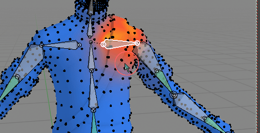
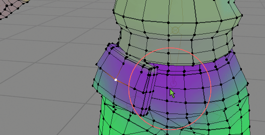
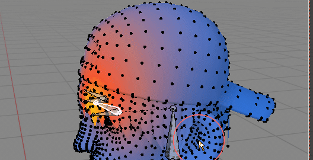
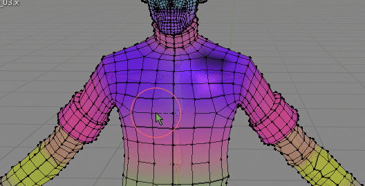
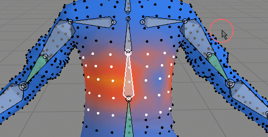
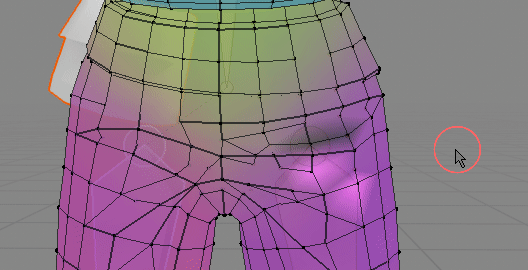
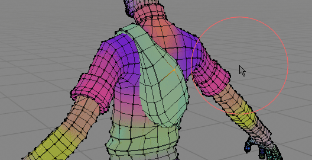
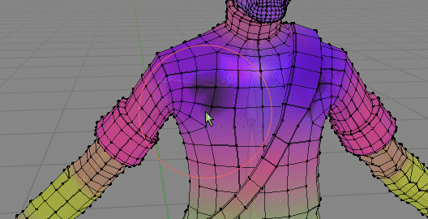

Set Weight¶
Set Weight
Fill vertex weights up to 100%¶
 Joins selected objects together into collection instance
Joins selected objects together into collection instance
If vertex is not normalized (total sum of vert weights is below 1), then increase active vertex group weight until sum reaches 100%
Select active vertex group bone¶
 On more complicated rigs it may be hard to find bone that influences selected vertices Select bone based on current active vertex group
Copy / Paste Vertex weights¶
 You can copy one vertex weight (from belt), and paste to pouch to make it more rigid (it will have same vertex weight on all vertices) Copy all Vertex weights from selection and paste to target vertices.
- you can copy one vertex weights to multiple target vertices (like on gif above)
- if you copy N vertices, then paste to N target vertices, the order of selected vertices weights will be preserved
Transfer Vertex Weights¶
 Transfer weights from eyelid bone to head bone on selected vertices Select source bone A - then target bone - B. Weights on selected vertices will be moved from vertex group A to B This operator has few properties (F9) key: Mixing Method of vertex group A with B (target / receiver):
- Replace - Replace weight B with A
- Add - Add A to B
- Lighten - Lighten
- Difference - substract weighs A from B
- Multiply - Multiply A timex B
Clear Source Weights - if true remove vertex weights from source vertex group A
Symmetry Offset¶
Define distance tolerance when finding mirrored vertices pairs. Bigger offset makes it easier to find corresponding mirrored vert, but too big value may return vertices that should not be actually considered a pair. The distance can be adjusted with modal 'Define Symmetry Offset' operator.
Mirror Vertex Group(s)¶
 In this case I want to replace characters left (ours right) clavicle weights, to copy nice gradient from left side
Mirror selected vertices weights to opposite side of mesh. To use it, selecting properly weighted side of mesh, and then run 'Mirror Vertex Groups'. It will mirror correct weight to 'broken' side. The mirroring accuracy is defined by 'Symmetry Offset' parameter.
Properties (F9):
- All Groups - if True mirror all vertex group from selected vertices (or just active one if set to False)
- Symmetrize - instead of mirroring vertex group from left bone to right bone, symmetrize vertex group(s). Useful for center bones - eg spine.
 Symmetrize vs non symmetrize version
Mirror Vertex Group(s) - Project¶
 Fixing broken pants. Notice that pants topology is not symmetrical Same as 'Mirror Vertex Group' but works great with non symmetrical topology meshes. The main difference in workflow is that you select the 'broken' side of mesh first, then run 'Mirror Project', so it is reverse of how normal 'Mirror Vertex Groups' work (where you select fixed side of mesh first)
Properties (F9):
- All Groups - if True mirror all vertex group to selected vertices (or just active one if set to False)
- Symmetrize - instead of mirroring vertex group from left bone to right bone, symmetrize vertex group(s). Useful for center bones - eg spine.
Project weights¶
 In this case weights from body are projected to backpack
Project weights from non selected mesh parts to selection
Override from adjacent¶
 Override selected verts weights from adjacent non selected vertices. Helpful in removing broken vertices.